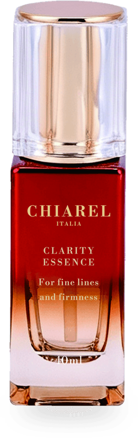
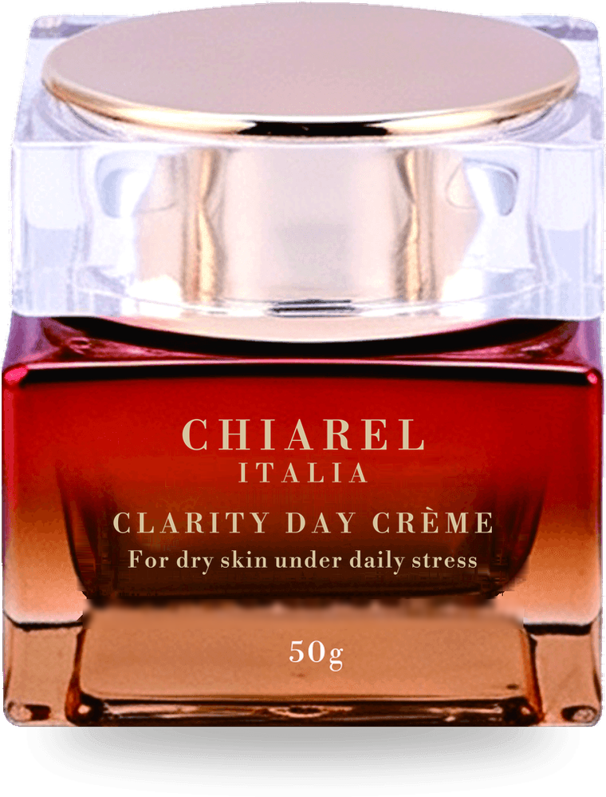

Focus Ladder direction · Image treatments
Four ways to frame the bottle
Ideas taken from how other luxury skincare houses present product (observed on drsturm.com, first screens and one product page), re-drawn here on the CHIAREL grid with CHIAREL's own photographs. Nothing is copied. A static preview: not the live site.
The plate
One packshot, large, on a flat ground with a single hard shadow. Borrowed from the macro lead image on a product page, where the product was a dropper bottle. CHIAREL's products are a spray and cream jars, so the plate is drawn per form: tall and vertical for the spray, low and wide for the jars. The ground is Ivory and the shadow is flat ink at 10 percent, not a soft blur.
The spray

The jar

Use
The first image on a product page and the specification sheet. The spray is tall, so it stands full height; the jars are low and wide, so they sit centred. Both use a flat Ivory ground and one hard shadow. A top-down photograph of a jar lid would make a natural circle for treatment B; none exists in the library, and I did not draw one.
The lens
A circular crop with a Red Ochre ring. Taken from circular product tiles on a homepage carousel. For CHIAREL the circle reads as a lens, the literal object that brings something into focus, and it echoes the round jars. It earns its place in a direction built on clarity. Used once per page, never as a repeating pattern.


The contact sheet
A tight modular grid of scene photographs, one cell larger, with hairline gaps and outline index numerals. Borrowed from the tiled collage on a homepage hero, made Swiss: equal modules, ruled, numbered. Uses only product scenes; no model photography exists yet.


The gallery rail
A thumbnail rail beside one large image, mixing packshot, macro, scene and detail in the same 4:5 module. Taken from the product-page gallery structure: a mixed sequence tells the product's story in order. Here the rail sits on two grid columns and the active frame takes an ink border.
Use
Already how the product-page gallery works; the change is the module, the rail position and the active border.
What was not borrowed
Promotions and discount pop-ups, the sticky chat widget, props and snow-and-mountain backdrops, and model photography. CHIAREL does not discount, and has no model imagery to use.